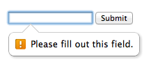
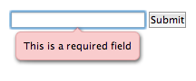
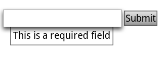
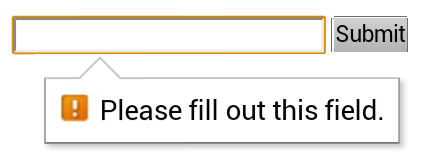

约束验证：网页表单的本地客户端验证
译者言：此文翻译自Constraint Validation: Native Client Side Validation for Web Forms
众所周知，验证表单一直有很痛苦的开发体验。实现一种用户体验好、开发体验好且可访问性好的客户端验证是很困难的事情。在HTML5出现之前没有一种本地实现的验证，所以开发者使用了各种各样基于javascript的验证方案。为了解放开发者，HTML5引入了约束验证的概念，一种本地实现的网页表单验证。
尽管所有主流浏览器的最新版本都支持了这个特性，约束验证目前还仅限于展示和demo的阶段。写这篇文章的目的就是帮助开发了解这个新的api，做出更好的网页表单。在这个教程中作者会：
- 全面地展示约束验证是什么；
- 发现现今标准和浏览器实现上的限制；
- 讨论现在如何在你的表单中使用约束验证；
约束验证是什么？
约束验证的核心是浏览器在提交表单时判断其是否合法的算法。为了做这个判断，算法利用了几个新的HTML5属性：min、max、step, pattern, 和 required 以及已经存在的 maxlength 和 type。下面的这个例子中Text input使用了一个值为空的 required 属性：
<form>
<input type="text" value="" />
</form>
在线查看demo。如果你在支持约束验证的浏览器中提交表单，那么浏览器会阻止表单提交并显示成如下效果：
Chrome 21

Firefox 15

Internet Explorer 10

Opera 12

Opera Mobile

Chrome for Android

Firefox for Android

标准中没有规定浏览器应该如何显示错误信息，这是由浏览器自己约定的。不过标准提供了一套DOM API、新HTML属性和CSS钩子帮助开发者自定义样式。
DOM API
约束验证的API添加了如下属性和方法到DOM节点中。
WILLVALIDATE
willValidate 属性标识了这个DOM节点是否使用约束验证。对于可以提交的元素来说这个属性会被设置成 true 除非因为某些原因被禁止使用约束验证，例如有 disabled 属性时。
<div id="one"></div>
<input id="two" type="text" />
<input id="three" type="text" disabled="disabled" />
<script type="text/javascript">// <![CDATA[
document.getElementById("one")
.willValidate; //false
document.getElementById("two")
.willValidate; //true
document.getElementById("three")
.willValidate; //false
// ]]></script>validity
Dom节点的validity 属性会返回一个 ValidityState对象，它包含了一系列与节点相关的布尔属性的验证结果。
customError:true标识是否使用了自定义的验证消息，可以通过setCustomValidity()来设置验证消息；<input id="foo" type="text" /> <input id="bar" type="text" /> <script type="text/javascript">// <![CDATA[ document.getElementById("foo") .validity.customError; //false document.getElementById("bar") .setCustomValidity("Invalid"); document.getElementById("bar") .validity.customError; //true // ]]></script>patternMismatch:true标识节点的value是否匹配它的pattern属性值。<input id="foo" type="text" value="1234" /> <input id="bar" type="text" value="ABCD" /> <script type="text/javascript">// <![CDATA[ document.getElementById("foo") .validity.patternMismatch; //false document.getElementById("bar") .validity.patternMismatch; //true // ]]></script>rangeOverflow:true标识是否节点的value比它的max属性值还大。<input id="foo" type="number" value="1" /> <input id="bar" type="number" value="3" /> <script type="text/javascript">// <![CDATA[ document.getElementById('foo') .validity.rangeOverflow; //false document.getElementById('bar') .validity.rangeOverflow; //true // ]]></script>rangeUnderflow:true标识是否节点的value比它的min属性值还小。<input id="foo" type="number" value="3" /> <input id="bar" type="number" value="1" /> <script type="text/javascript">// <![CDATA[ document.getElementById('foo') .validity.rangeUnderflow; //false document.getElementById('bar') .validity.rangeUnderflow; //true // ]]></script>stepMismatch:true标识是否节点的value与它的step属性值不符合.<input id="foo" type="number" value="4" /> <input id="bar" type="number" value="3" /> <script type="text/javascript">// <![CDATA[ document.getElementById('foo') .validity.stepMismatch; //false document.getElementById('bar') .validity.stepMismatch; //true // ]]></script>tooLong:true标识是否节点的value长度超过了maxlength属性值。所有的浏览器都会阻止用户输入超过最大长度值的内容。<input id="foo" type="text" value="A" maxlength="1" /> <input id="bar" type="text" value="AB" maxlength="1" /> <script type="text/javascript">// <![CDATA[ document.getElementById('foo') .validity.tooLong; //false document.getElementById('bar') .validity.tooLong; //true in Opera, false in other supported browsers. // ]]></script>typeMismatch:true标识是否input节点的value与type属性值不匹配。<input id="foo" type="url" value="http://foo.com" /> <input id="bar" type="url" value="foo" /> <input id="foo2" type="email" value="foo@foo.com" /> <input id="bar2" type="email" value="bar" /> <script type="text/javascript">// <![CDATA[ document.getElementById('foo') .validity.typeMismatch; //false document.getElementById('bar') .validity.typeMismatch; //true document.getElementById('foo2') .validity.typeMismatch; //false document.getElementById('bar2') .validity.typeMismatch; //true // ]]></script>valueMissing:true标识是否节点有required属性却没有值.。<input id="foo" type="text" value="foo" /> <input id="bar" type="text" value="" /> <script type="text/javascript">// <![CDATA[ document.getElementById('foo') .validity.valueMissing; //false document.getElementById('bar') .validity.valueMissing; //true // ]]></script>valid:true标识是否所有的验证提交都满足，有任意一条不满足则为false。<input id="valid-1" type="text" value="foo" /> <input id="valid-2" type="text" value="" /> <script type="text/javascript">// <![CDATA[ document.getElementById('valid-1') .validity.valid; //true document.getElementById('valid-2') .validity.valid; //false // ]]></script>
VALIDATIONMESSAGE
Dom节点的 validationMessage 属性包含浏览器显示给用户看的错误信息，即验证出错时候的提示信息。
浏览器为这个属性提供了一个默认的本地化信息。如果DOM节点不需要验证或者节点包含正确的内容，那么validationMessage会被设置为空字符串。
注意：在写这篇文章的时候，Opera默认不会填充这个属性。
结论
HTML5的约束验证API使得在客户端添加验证变得快捷的同时还提供了Javascript API和CSS钩子来自定义。
尽管还是有很多浏览器实现和旧浏览器兼容的问题存在，配合好的降级库或是服务器端验证，开发者就可以在自己的表单中使用这些API。
译者言：看完之后觉得约束验证的API设计的真心不好用。。。